项目基准 P-SA-M03-V8

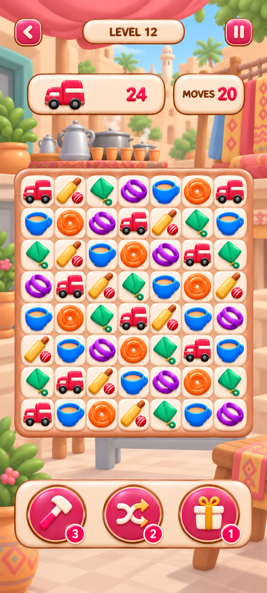
当前用户满意的本地化视觉基准，保留原900×2000 PNG，没有重新生成或调色。
最近的参考家族为T04，但该项目短粗造型不作为其他游戏的强制规定。原图配色和文化内容来自本项目，不来自竞品。
模板研究与八套效果图验收是不同阶段；本页只完成证据核对和规则重建。
T01 · 规则图形与功能型平面
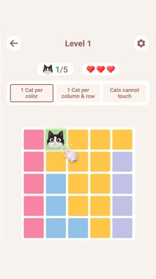
归档商店来源
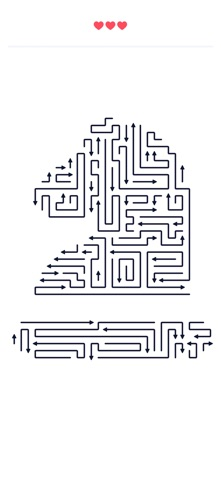
归档商店来源
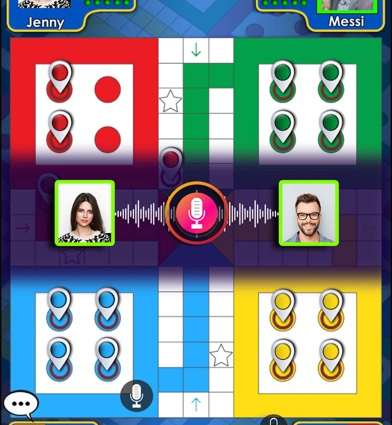
归档商店来源
造型与概括：规则几何服务于路径、格子和操作识别；对象轮廓按功能区分。允许小圆角与图案化小图，不要求所有形状变成方块。
绘制与表面表现：主体以平面边界、线与色面组织，少量身份图标可以另有绘制细节。不能把局部头像或棋子的立体效果推广到整套。
UI结构：对齐、留白、字号和触达范围稳定；工具按钮可精致但保持简洁，不为表现风格堆厚框和多圈描边。
场景组织：信息空间优先。项目需要地区场景时采用概括构图与局部背景层，不照搬竞品空白底，也不把场景做成像素积木。
迁入项目的适用判断：规则图形、棋盘路径、连接/逻辑类；若玩法对象本身不可改形，优先保留准确轮廓。
纠正旧模板：V8 M01把植物与建筑全部方块化，超出了这些局内画面的共同证据。
证据范围：只以 Meowdoku 主棋盘、Arrows 玩法线条及 Ludo King 棋盘为依据；不把人物头像、蛇梯玩法或大厅组件混成单一平面画法。
可迁移的形式片段（不含配色/题材）
Functional flat game graphics with precise readable silhouettes, consistent graphic edges, disciplined alignment and restrained component framing. Preserve each object's necessary structural shape; organize the environment as subordinate broad forms.
T02 · 清晰轮廓的2D图标插画
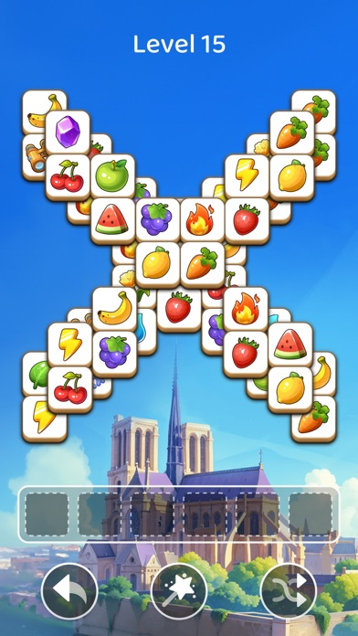
归档商店来源
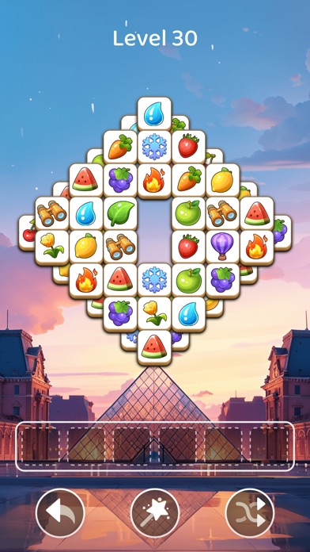
归档商店来源
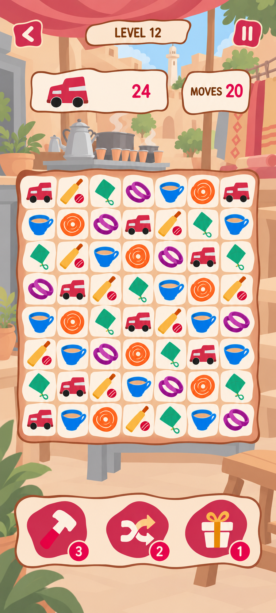
造型与概括：物件采用概括但可辨的自然结构，轮廓完整，内部只保留身份特征；同类物件的视角与视觉占面稳定。并非不规则剪纸轮廓。
绘制与表面表现：图标有可辨的闭合轮廓、少量内部线与轻量明暗/亮面；容器有独立边缘与厚度。不能声称该参考是无高光、无体积的纯平面手绘。
UI结构：符号紧凑易认，排列、容器边界与操作区规则稳定；不把手绘感转换成波浪棋盘、歪斜底板或粗糙边缘。
场景组织：图标、容器和环境是不同资源层。参考图中环境可比图标更具绘景感；迁入项目时仍由本地背景层级约束其干扰度。
迁入项目的适用判断：物件匹配、图案识别、轻插画休闲；保留现有固定图案视角。
纠正旧模板：撤销旧M02“Tile Explorer=纯平面手绘=所有边框不规则”的等式。若仍要无立体手绘，应单列项目定制，不借该竞品证明。
证据范围：本次复看图01/04；轻量明暗与容器厚度在图中可见，但缩略尺寸不足以推定笔刷或制作软件。
可迁移的形式片段（不含配色/题材）
Compact illustrated game icons with clear enclosing contours, simplified recognizable construction, restrained internal drawing and light pictorial modeling. Keep orderly stable UI containers and a coherent subordinate illustrated environment.
T03 · 规整结构的硬质浅浮雕
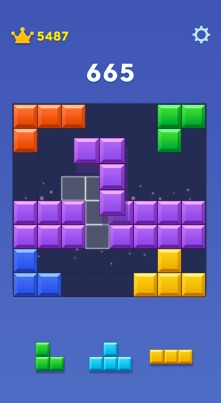
归档商店来源
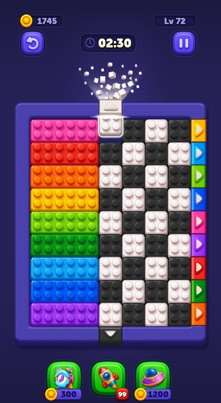
归档商店来源
造型与概括：直边、小范围圆角与统一模块尺度，外轮廓首先表达组合结构。小圆角并不消除准确的直边、拐角和接缝。
绘制与表面表现：通过一致的短倒角、顶/侧面和简洁接触关系表现浅厚度；不是完整玩具空间，也不需要大量纹理。
UI结构：信息和按钮稳定对齐；承托、接缝与边框分工清楚。块体的体积语言不要求按钮和所有背景都长成模块拼块。
场景组织：规则模块主要属于玩法资源。项目环境按相近概括程度和边缘质量协调，不把建筑、叶子和布篷强制切成多边形碎块。
迁入项目的适用判断：方块、拼装、槽位、规则容器；其他物件只能借鉴浅浮雕组织，不牺牲身份轮廓。
纠正旧模板：与“所有内容敦实块体”的旧M04区分，也与软亮面T04区分；不用通篇低多边形制造差异。
证据范围：Block Out 可见凸点属于其玩法物件设计，不转移为本项目装饰；不复制其模块题材或颜色方案。
可迁移的形式片段（不含配色/题材）
Structurally precise game pieces with crisp straight sections, selective small-radius corners, consistent shallow bevels and clean top-versus-side construction. Use stable functional UI and coordinated simplified environment forms.
T04 · 润泽休闲图标与受控立体
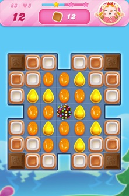
归档商店来源
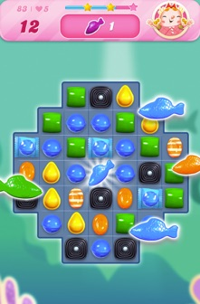
归档商店来源
造型与概括：同一画面允许方形、椭圆、弧形和尖端形等不同剪影共存；圆角和体量用于亲和与可读性，而非把所有物件都压成同样短粗鼓包。
绘制与表面表现：主要形体用连续、克制的亮面和体积转折表达；细节集中在大形与边缘。二维资源可以呈现此效果，不据静态图断定真实3D管线。
UI结构：组件轮廓圆润而规整，文字与操作区稳定；不把画面统一理解为所有UI都需巨厚边框、极强高光和多重金边。
场景组织：玩法图标精确完整，环境可采用更概括的绘景语言；共享气质与完成度，不需要背景建筑同样变成膨胀糖果形。
迁入项目的适用判断：消除、泡泡、图标驱动的休闲玩法；体积与视觉占面由当前玩法显示尺度控制。
纠正旧模板：保留用户满意的V8 M03作为项目基准；撤销“参考Candy Crush意味着所有层一律饱满短粗”的推论。
证据范围：只依据图04/05中局内棋盘与可见HUD，排除商店宣传条、放大糖果和宣传效果；不借其配色、糖果元素或色彩层级。
可迁移的形式片段（不含配色/题材）
Polished casual-game pictorial volume, varied readable silhouettes, controlled continuous highlights and concise surface transitions. Keep rounded yet orderly UI components and a more broadly simplified coordinated environment.
T05 · 简化实体与轻量玩具3D
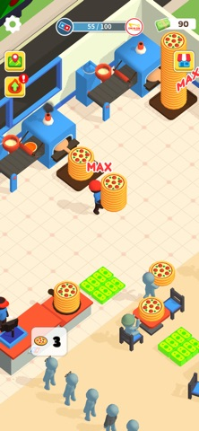
归档商店来源
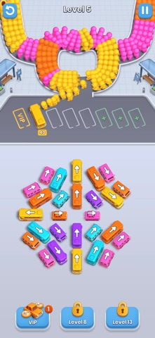
归档商店来源
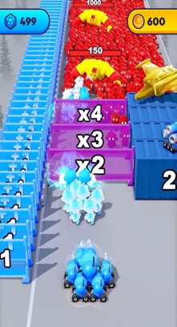
归档商店来源
造型与概括：按对象功能组合盒体、柱体和概括曲面，直曲并存。基础单位结构简单、重复一致，物件保持足够厚度与方向识别。并非统一块面低多边形。
绘制与表面表现：宽尺度表面、简单材质和接地受光，结构可读而表面信息少。少量圆角服务轮廓；不要用杂色切面、方形车轮或细三角网格证明简模。
UI结构：UI保留屏幕平面的稳定组件和语义；场景实体与UI按钮不必具有同样的几何比例或厚度。
场景组织：家具、植物、道路/空间边界按各自结构概括，共享简化程度和渲染完成度。当前游戏视角/布局固定时，不引入竞品斜俯视镜头或空间规则。
迁入项目的适用判断：收纳、经营、排序、物件摆放等；也可转成固定视角的静态素材表现。
纠正旧模板：旧M04全场块体仅为历史探索，不作为这类竞品的共同造型规范。Bus Fever 的规整圆角实体不等同于低多边形块面。
证据范围：Mob Control仅支持基础重复单位的简化判断；其特殊巨型角色与复杂对象不作为全部资源的默认标准。
可迁移的形式片段（不含配色/题材）
Simplified solid game objects built from a few function-appropriate box, cylinder and curved volumes, broad uncluttered materials and simple grounded lighting. Preserve clear object direction, stable UI and coordinated simplified scene construction.
T06 · 动画化游戏造型与场景
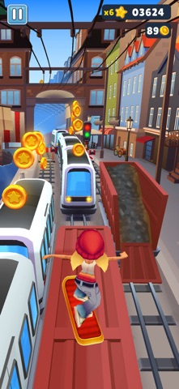
归档商店来源
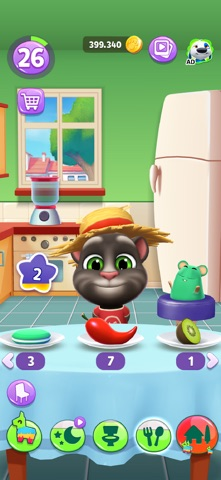
归档商店来源
造型与概括：对象按身份选择比例和夸张重点；角色可有主次体量差，建筑、工具与家具仍保留稳定结构。不会把所有物件收腰渐缩或统一拉成S形。
绘制与表面表现：连续曲面、概括结构、清楚大形与受控材质变化。以局内完成度为准，不将封面角色宣传原画自动提升为全界面的电影渲染要求。
UI结构：HUD与操作组件规整稳定，图标语义清楚；动画角色风格不要求文字、格子和所有面板随之扭曲。
场景组织：建筑平面、角色曲面、道具结构可共存，靠比例尺度、细节预算和画面层级协调。保留当前游戏镜头，不复制跑酷透视或养成房间结构。
迁入项目的适用判断：人物/宠物或重点场景较强的游戏；若只是小尺寸图标，不因模板名称新增角色或提高细节密度。
纠正旧模板：撤销旧M05“整屏渐缩、偏移重心和流线变形”的强制规则；它们只是可用造型手段。
证据范围：Subway Surfers 图03为局内观察，图01封面不作局内材质精度依据；Talking Tom不同场景/近景资源不强制一档细节。
可迁移的形式片段（不含配色/题材）
Animation-styled game art with identity-led stylized proportions, clear primary masses, smooth controlled surfaces and restrained material variation. Coordinate characters, constructed environment objects and stable screen-space UI without uniform distortion.
T07 · 线描叙事与平涂插画
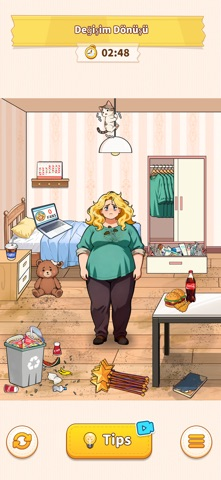
归档商店来源
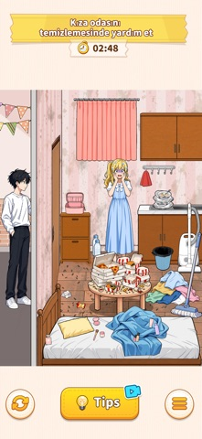
归档商店来源
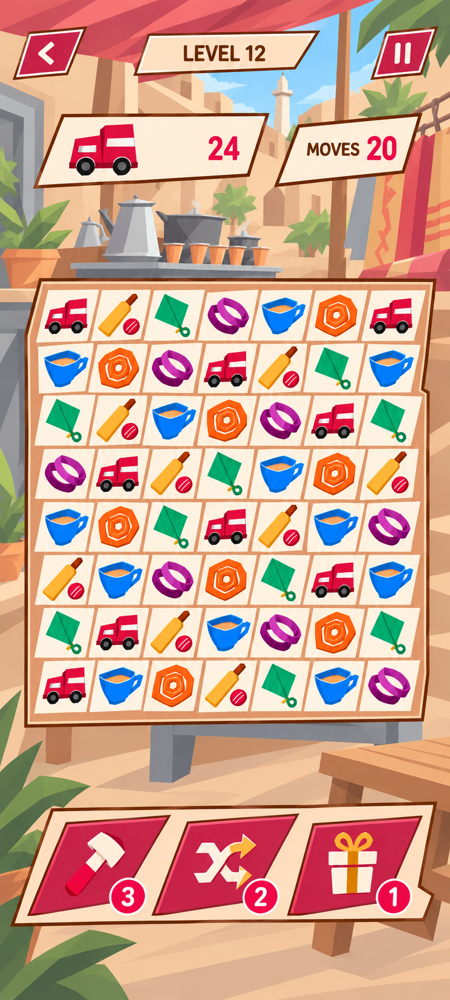
造型与概括：物件与角色保留可辨结构和正常的空间关系，允许线描夸张，但不是所有轮廓都变楔形或斜切。
绘制与表面表现：外轮廓与必要内结构线组织形体，结合平涂或少量分区明暗；线条承担绘制语言而不是给任意3D图一圈描边。
UI结构：所见顶栏、底部工具和按钮保持规整。棋盘、文字和点击区域必须稳定，不为所谓漫画动势整体剪切、倾斜或变形。
场景组织：叙事场景按线描、空间层次与物件概括协调。参考中细节常承担线索任务；转成消除游戏时不继承这种线索密度。
迁入项目的适用判断：叙事、线索、情境互动或确实需要线描气质的休闲；非线索玩法降低无功能内部线。
纠正旧模板：撤销旧M06“斜切剪影=漫画”的绑定。V8倾斜棋盘和面板不是该竞品局内UI的归纳结果。
证据范围：仅以图03/04可见场景与工具栏为依据；不复制角色、室内物件或叙事情节。
可迁移的形式片段（不含配色/题材）
Line-drawn narrative illustration with recognizable object construction, coherent contour and internal-line hierarchy, broad filled areas and restrained drawn shading. Keep readable spatial relationships, orderly interface components and unwarped gameplay geometry.
T08 · 概括材质与自然结构
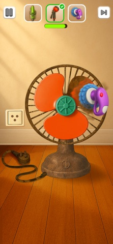
归档商店来源
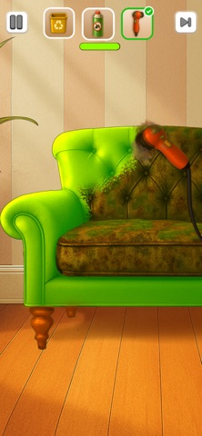
归档商店来源
造型与概括：按照物件实际结构处理比例、厚薄、连接和工作部位，适度概括；自然比例并不等于细节繁复。
绘制与表面表现：通过宽尺度材质反应或必要的表面状态区分质地。纹理/污渍仅在玩法有意义时保留；装饰小花、刻纹、织纹不能成为轻写实默认配置。
UI结构：工具与状态表达需要可读，容器框架服从功能与屏幕尺度，不要求全部UI模仿真实材质。
场景组织：前景工作物件更完整，环境适当概括；若用户游戏不含清洁/修复任务，不新增污渍、损坏或工作工具来模拟参考。
迁入项目的适用判断：材质反馈、清洁、修复等；迁入普通消除游戏需谨慎控制小图标识别与纹理预算。
纠正旧模板：撤销旧M07“纹理更多才更真实”的实际生成倾向，禁止为木/金属原色覆盖已定玩法功能色。
证据范围：参考截图为工作对象、工具与状态场景；未验证真实引擎、着色器或具体材质制作方法。
可迁移的形式片段（不含配色/题材）
Simplified natural object construction with believable proportions and broad readable material responses. Preserve concise silhouettes and only gameplay-relevant surface states, with stable UI and a subordinate coordinated environment.
维护入口：GPT生图Skill → 休闲游戏美术指导。只把选中的形式特征编译进提示词；配色、元素和界面契约另从当前项目载入。